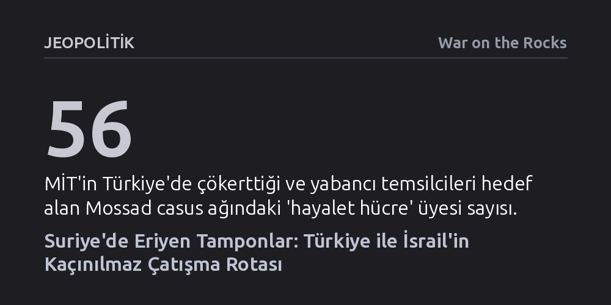

JEOPOLITIK · War on the Rocks · 2026-09-07
Esad sonrası Suriye'de tampon bölgelerin yok olması, Ankara'nın merkezi devlet inşası doktrini ile İsrail'in çevreleme stratejisini doğrudan askeri çatışma rotasına soktu. Ebu el-Zuhur saldırısı, iki aktör arasındaki hesaplaşmayı diplomatik gerilimden konvansiyonel çatışma eşiğine taşıdı.
Bu analiz, Türkiye-İsrail geriliminin iç siyasete dönük sözlü bir retorik olmaktan çıkıp Suriye'den Doğu Akdeniz'e uzanan fiilî ve konvansiyonel bir askeri hesaplaşmaya dönüştüğünü gösterir.

İsrail savaş uçaklarının Suriye'deki Ebu el-Zuhur hava üssünü vurması, Orta Doğu jeopolitiğinde yıllardır sürdürülen konforlu bir varsayımı yerle bir etti. Batılı başkentlerde Türkiye ile İsrail arasındaki sürtüşmenin yalnızca iç kamuoylarına yönelik bir söz düellosundan ibaret olduğu düşünülüyordu. Oysa Ebu el-Zuhur'da hedef alınan nokta, Türk Silahlı Kuvvetleri'nin yerel güvenlik kapasitesi inşa etmeye çalıştığı stratejik bir etki alanıydı.
Esad rejiminin çöküşünün ardından güneye doğru askeri ve istihbari varlığını hızla genişleten Ankara, Levant'ın yeni güvenlik mimarisinde kurucu bir aktör olarak konumlandı. İsrail ise gerçekleştirdiği bu hava harekâtıyla Şam'daki yeni yönetime açık bir mesaj iletti: Türk askeri varlığına asla müsamaha gösterme. Bu hamle, Tel Aviv güvenlik bürokrasisinde bir süredir pişen "Türkiye yeni İran'dır" yaklaşımının sahada doğrudan operasyonel bir karşılık bulduğunu kanıtlıyor. İki başkent arasındaki geleneksel diplomatik kriz yönetiminin miadı dolmuş durumda; zira aradaki fiziki ve jeopolitik tampon bölgeler bütünüyle ortadan kalktı.
Suriye sahası, iki ülkenin güvenlik doktrinlerinin kafa kafaya çarpıştığı bir laboratuvara dönüştü. İsrail savunma aygıtı, Golan sınırını korumak ve Hizbullah'a uzanan lojistik hatları kesebilmek adına Suriye hava sahasında mutlak hareket serbestisine sahip olmayı varoluşsal bir zorunluluk olarak görüyor. Bu hedefe ulaşmak için de asimetrik vekil unsurlara karşı geliştirdiği "Savaşlar Arası Sefer" doktrinini, bugün Türk Silahlı Kuvvetleri'nin düzenli ordu ve devlet inşası çabalarına karşı uygulamaya kalkışıyor. Ancak asimetrik milisleri yıpratmak üzere kurgulanan bir taktiğin konvansiyonel bir güce karşı yürütülmesi, İsrail'i kaldıramayacağı bir devletlerarası sürtüşmeye itiyor.
İsrail stratejisi, sınırlarında parçalanmış ve zayıf tampon yapıları, toparlanmış merkezi bir devlete tercih etme yanılgısına dayanıyor. Bu yaklaşım, tehdit olarak gördüğü milisleri kontrol edebilecek yegâne mekanizmayı, yani işleyen bir merkezi devlet otoritesini felce uğratıyor. Buna karşılık Türk dış politikasının yeni bölgesel vizyonu tam zıt yönde işliyor: Sınır ötesindeki istikrarsızlığı milislerle değil, meşru şiddet tekelini elinde tutan rasyonel devlet mekanizmaları inşa ederek bitirmek. Ankara, Şam'da Ahmet eş-Şara liderliğinde düzenli bir ordunun kurulmasını, gayrinizami terör örgütlerinin tasfiyesini ve mültecilerin dönüşünü ancak kurumsal bir devlet yapısının sağlayabileceğini savunuyor.
İsrail tarafı, saldırıyı Türkiye'nin üsse radar ve hava savunma sistemi kuracağı istihbaratına dayandırarak savunmaya çalışsa da bu gerekçe kendi içinde tutarsızdır. Zira radar ve hava savunması niteliği gereği savunma amaçlı unsurlardır ve yeni Suriye'nin istikrarı için doğal bir ihtiyaçtır. İsrail'in asıl rahatsızlığı, savunma amaçlı dahi olsa Suriye semalarının denetim altına alınması ve kendi hava operasyonlarının sınırlandırılması ihtimalidir.
Karadaki tamponların erimesi, iki gücün rekabetini Doğu Akdeniz'e ve istihbarat sahasına da kaçınılmaz olarak sıçrattı. İsrail'in Yunanistan, Güney Kıbrıs ve Fransa ile geliştirdiği enerji odaklı güvenlik paktları, Ankara tarafından bir deniz kuşatması olarak kodlanıyor. Türkiye, bu hamleye Mavi Vatan doktrinini diplomatik bir tezden proaktif bir donanma caydırıcılığına dönüştürerek yanıt veriyor. Türk donanmasının bölgedeki kararlı varlığı, Ankara'nın rızası hilafına hiçbir tek taraflı enerji koridorunun kurulamayacağını İsrail'e fiilen gösteriyor.
Görünmez tamponlar istihbarat alanında da tamamen eridi. MİT ile Mossad arasındaki temas, klasik bilgi toplama faaliyetini aşarak doğrudan saha kapasitelerini kırmaya odaklanan bir mücadeleye dönüştü. Türkiye içinde yürütülen sistematik karşı istihbarat operasyonlarıyla Mossad'ın yerleşik ağları çökertilirken; mücadele Suriye, Irak ve Lübnan sahasına taşındı. İstanbul'dan Suriye'deki operasyonel hücrelere aktarılan finans ağlarının deşifre edilmesi, iki servisin artık vekiller üzerinden değil, doğrudan doğruya birbirlerinin sinir uçlarına basarak çatıştığını ortaya koyuyor.
İsrail'in sahada tırmandırdığı gerilimin asıl hedef kitlesi Ankara'dan çok Washington'dır. Tel Aviv, krizi sıcak çatışma eşiğine getirerek ABD yönetimini Türkiye'nin genişleyen etkisine karşı müdahaleye zorlamaya çalışıyor. Ancak Amerikan istihbaratının İsrail'in askeri yığılma iddialarını teyit etmemesi ve Washington'ın Şam yönetimini terör listesinden çıkarma kararı, İsrail'in kurguladığı güvenlik anlatısını temelden sarstı. Ankara ise Ebu el-Zuhur saldırısına fevri bir askeri misilleme yapmayarak stratejik sabır gösterdi ve taktiksel bir tuzağa düşmekten kaçındı.
Bu yapısal krizin topyekûn bir bölgesel savaşa dönüşmesini önlemek için Batılı politika yapıcıların iki somut adımı atması şarttır. İlk olarak Washington, İsrail'in tek taraflı askeri maceralarını frenlemeli ve Levant'ta Türkiye'nin devlet inşası kapasitesini bir tehdit değil, bölgesel istikrarın temel direği olarak kabul eden samimi bir askeri ayrışma mekanizması kurmalıdır. İkinci olarak, Doğu Akdeniz'de Türkiye'yi dışlayan sıfır toplamlı askeri bloklaşmalardan vazgeçilmeli; Ankara'nın meşru deniz yetki alanlarını tanıyan kapsayıcı bir güvenlik çerçevesi oluşturulmalıdır. Tamponların ortadan kalktığı bu yeni denklemde rasyonel bir uzlaşı kurulamazsa, Ebu el-Zuhur'da yükselen dumanlar çok daha yıkıcı bir konvansiyonel fırtınanın habercisi olacaktır.